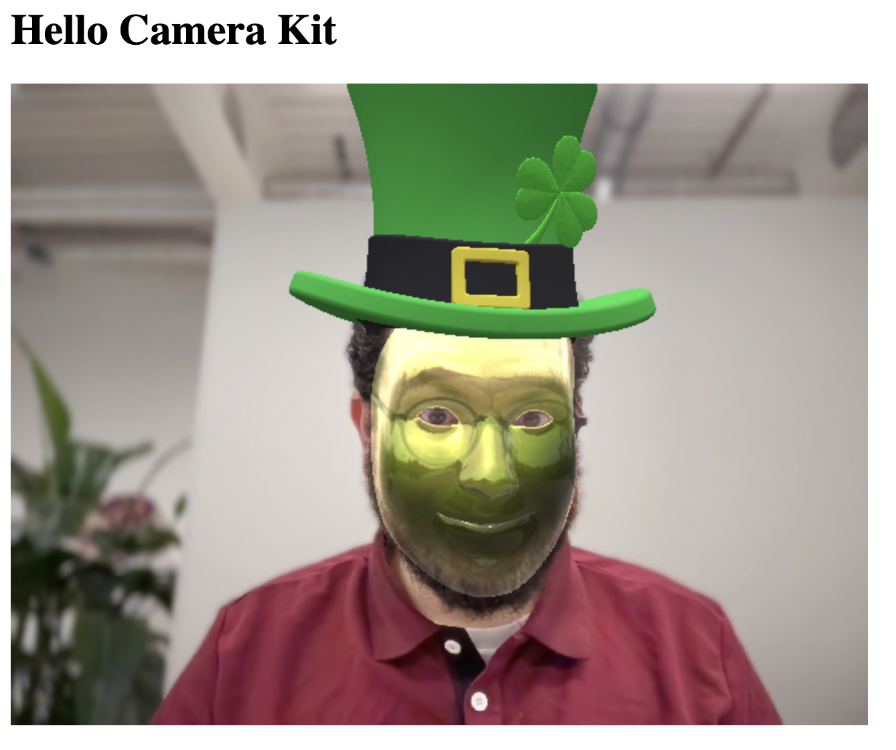

## Camera Kit Web --- ## What is it? A free Javascript SDK that allows you to run any lenses on a web application. <br /> [See it in action](https://camera-kit.snapchat.com/websdk/sample/basic) <br /> --- ## Code Sample ```js [1|5|19-20] import { bootstrapCameraKit } from '@snap/camera-kit'; (async function () { const cameraKit = await bootstrapCameraKit({ apiToken: 'YOUR_API_TOKEN', }); const liveRenderTarget = document.getElementById( 'canvas' ) as HTMLCanvasElement; const session = await cameraKit.createSession({ liveRenderTarget }); const mediaStream = await navigator.mediaDevices.getUserMedia({ video: true, }); await session.setSource(mediaStream); await session.play(); const lens = await cameraKit.lensRepository.loadLens( 'LENS_ID', 'LENS_GROUP_ID' ); await session.applyLens(lens); })(); ``` --- ## Next step: Build ``` > npm run ck-build ``` --- ## Voilà  --- ## Time to try it yourself Open the [self-guided lab](../guides/ck-on-web.md) ---